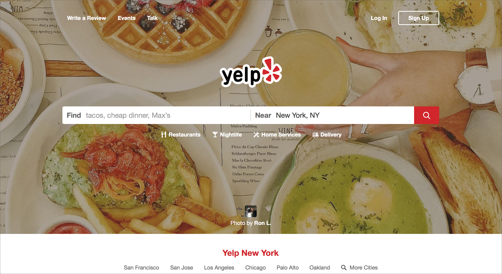
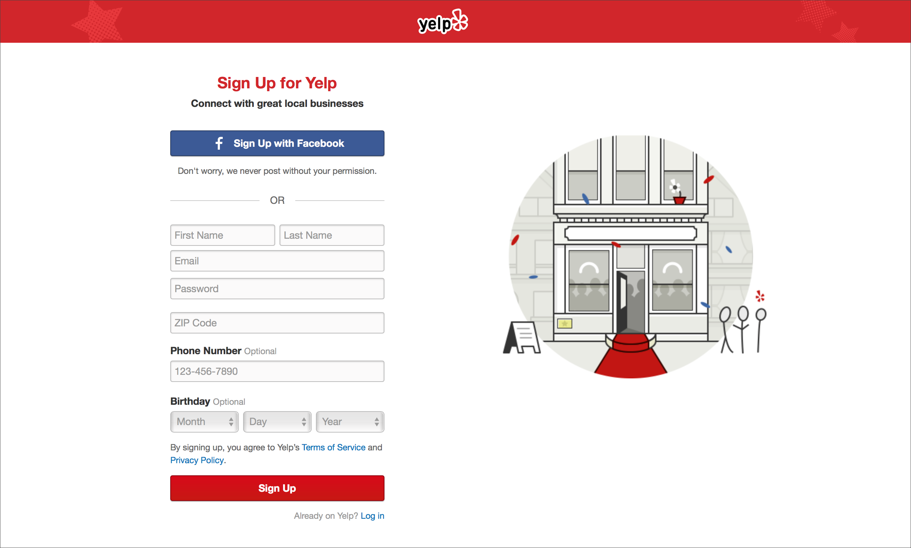
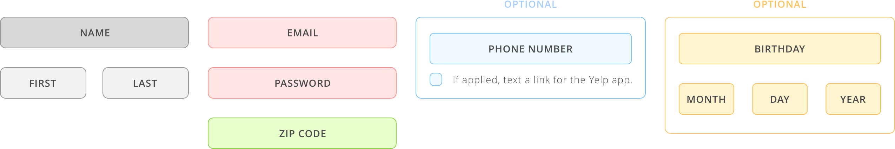
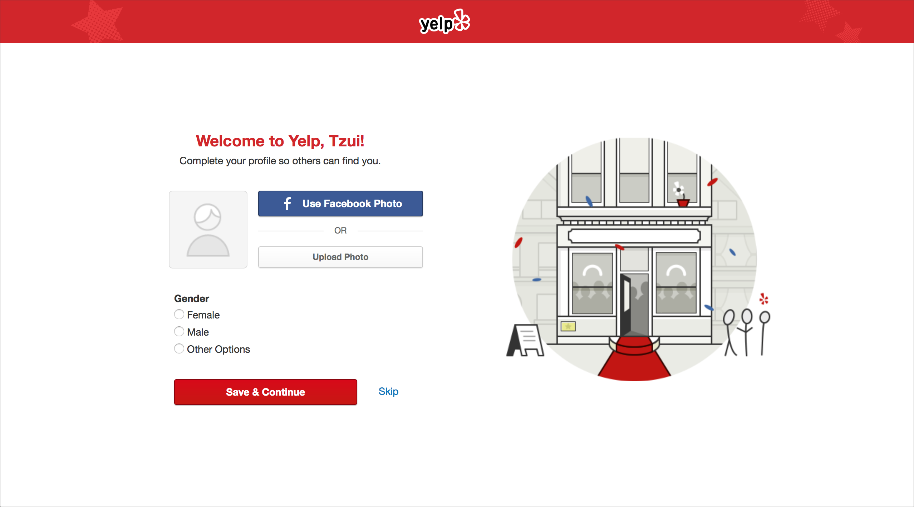

Landing Page:
The landing page looks nice with a background of random foodie images. The "Sign Up” and “Log In” buttons are on the top right of the page. And the “Sign Up” button has its white outline border, which is clear in visibility for the new users to find.
 Landing PageStep 1: Basic Info
After click on the "Sign Up” button, here comes the first step of the registration process. The easiest way is to just sign up with Facebook, whereas this time I want to do in a traditional way — fill up the forms.
 First step to open the account. The form contains Name (first and last name), Email, Password, Zip Code, Phone Number (Optional: if applied, text message a link for the Yelp app also, carrier rates may apply), Birthday(Optional: with drop-down menu - Month, Day, Year), Notice of Terms of Service and Privacy Policy, and Sign up button.
There is a round illustration on the right. With my own understanding, I see the building with a red carpet at the front door. There are people in the building, crowded like partying or celebrating. And three people standing outside the building, waiting to go inside (or not).
Step 2: Setup Profile
After hitting the “Sign Up” button to submit the application, the process is literary done. (well, that’s fast!) Now I see the Message of "Welcome to Yelp!,” and it encourages me to complete the profile, start with the photo.
 Second step to open the account.Photo: The options are "Use Facebook Photo" or "Upload Photo from your computer.”
Gender: So I have to choose from Female, Male and Other Options. For the "Other Option,” basically I can type in any content I want (I tried frog, transformer, mono… they all works), and it follows a question: How would you like to be referred to? Options are Male, Female and Neutral.
At the end, I can choose either “Save & Continue” or “Skip.” After hitting the button, The confirmation email will be sent immediately.
To me, the process is pretty easy with only 2 steps. The interaction is straight forward and the visual communication of the form is clear and understandable in general.
However, my concern is that there is no way back for the registration. Let’s assume that If I have typed in the wrong email, or phone number, I can’t go back to change it after the Step 1, the confirmation email will just send out, and I will never get it.
Also, if the illustration on the right change at each step will be great.
Tomorrow, I will working on the profile exploration.
Photograph by Tegan Mierle.